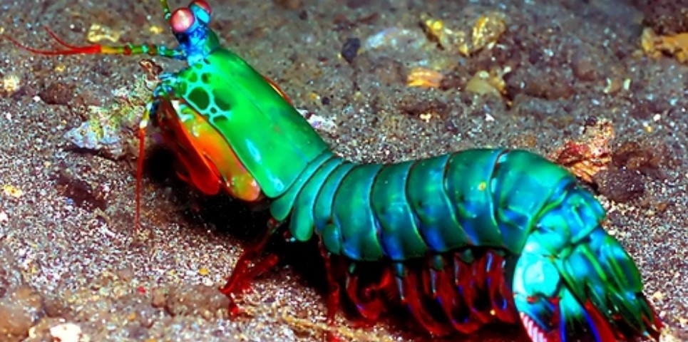

<!DOCTYPE html PUBLIC "-//W3C//DTD XHTML 1.0 Strict//EN" "http://www.w3.org/TR/xhtml1/DTD/xhtml1-strict.dtd">
<html xmlns="http://www.w3.org/1999/xhtml" xml:lang="pt-br" lang="pt-br"></html>
    <head>
        <meta charset="utf-8">
        <meta name="viewport" content="width=device-width" />
        <title>Stomatopoda a Desgraça dos sete mares</title>
    </head>
    <body>
        <header class="header">
            <nav>
                <ul>
                    <li><a href="">Página Inicial</a></li>
                    <li><a href="">Sobre</a></li>
                    <li><a href="">Contato</a></li>
                </ul>
            </nav>
        </header>
        <h1>Soco a 80km/h: Conheça o Stomatopoda.</h1>
        
        <section>
            <article>
                <h2>Fatos sobre a Stomatopoda</h1>
                    
                    <p> Dê uma olhadinha no belíssimo animal acima. Ele tem uma aparência incrível, não é mesmo? Tendo como nome científico <em>Odontodactylus scyllarus</em> Com tantas cores e cheio de estruturas interessantes. O “mantis shrimp”, conhecido por vários nomes, como lagosta-boxeadora, tamarutaca e esquila, realmente é fantástico. Tanto que o pessoal do site The Oatmeal criou um infográfico superinformativo especialmente para esse crustáceo.</p>

                    <p>Para começar, as lagostas-boxeadoras contam com olhos incríveis, que possuem três pontos focais cada e são capazes de enxergar do espectro ultravioleta ao infravermelho. Para que você tenha uma ideia, o olho humano contém milhões de células fotorreceptoras, entre elas os cones, que são as que nos permitem ver as cores.</p>
            </article>
            <article>
                <h3>16 cones, 12 de cores e mais 4 de Luz! </h3>
                
                <p>Nossos olhos possuem três tipos desses receptores — que respondem à luz azul, verde e vermelha —, que nos permitem perceber o espectro de cores que vemos. Os cães contam com apenas dois tipos de cones (verde e azul), e é por isso que eles vêm tons de azul, verde e um pouco de amarelo. Já as borboletas, sortudas, possuem cinco tipos de cones, o que significa que elas conseguem enxergar cores que o nosso cérebro é incapaz de processar.</p>

                <p>Contudo, as lagostas-boxeadoras são um crustáceo tão sensacional que elas não possuem dois, três ou cinco tipos de cones apenas. Elas contam com 16! Assim, o arco-íris que elas enxergam deve ser uma verdadeira explosão termonuclear de cores, luz e beleza. Mas, como a grande maioria das criaturas, esses animais também possuem um lado obscuro. No caso das tamarutacas, esse lado é negro e sanguinário.</p>
            </article>
            <table>
                <thead>
                    <tr><th>Classificação Científica</th></tr>
                </thead>
                <tr>
                    <td>Reino</td>
                    <td>Filo</td>
                    <td>Subfilo</td>
                    <td>Classe</td>
                    <td>Subclasse</td>
                    <td>Ordem</td>
                </tr>
                <tr>
                    <td>Animal</td>
                    <td>Artrópode</td>
                    <td>Crustacea</td>
                    <td>Malacostraca</td>
                    <td>Hoplocarida</td>
                    <td>Stomatopoda; Latreille, 1817</td>
                </tr>
            </table>
            <aside> 
                <h3>Referencias Bibliogŕaficas</h3>
                <nav>
                    <ul>
                        <li>
                            <a href="https://www.infopedia.pt/dicionarios/lingua-portuguesa/estomat%C3%B3pode">infopedia</a>
                        </li>
                    </ul>
                </nav>
            </aside>
        </section>
        <footer>
            <p>compilado por <a href="https://github.com/andersonagodoy" target="_blank">Anderson</a></p>
        </footer>
    </body>
</html>